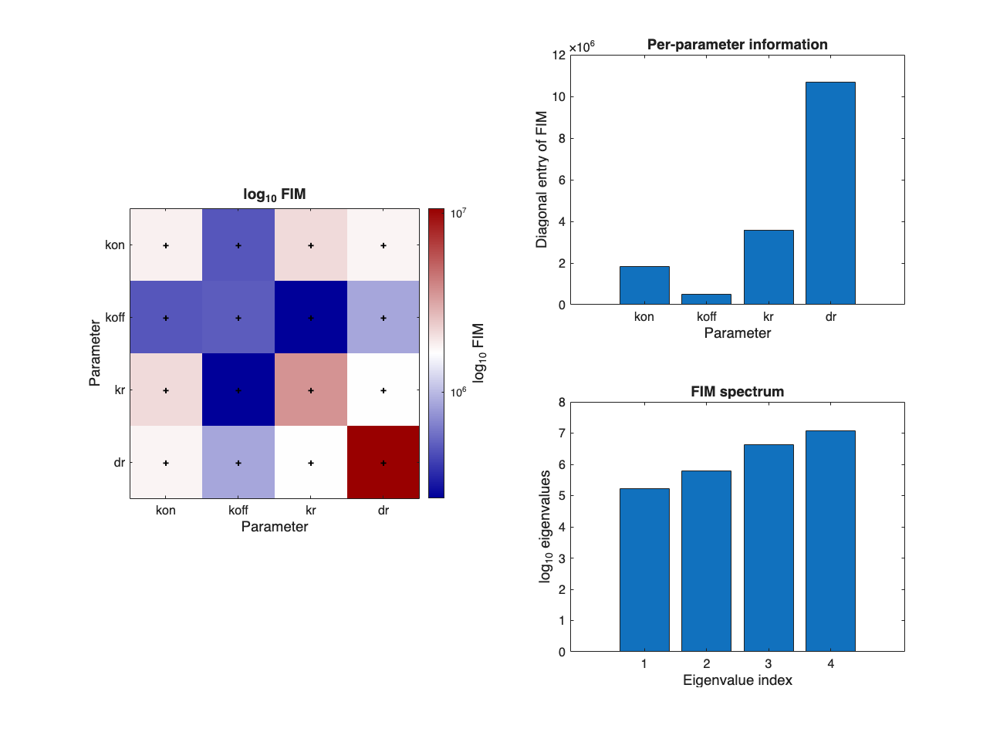
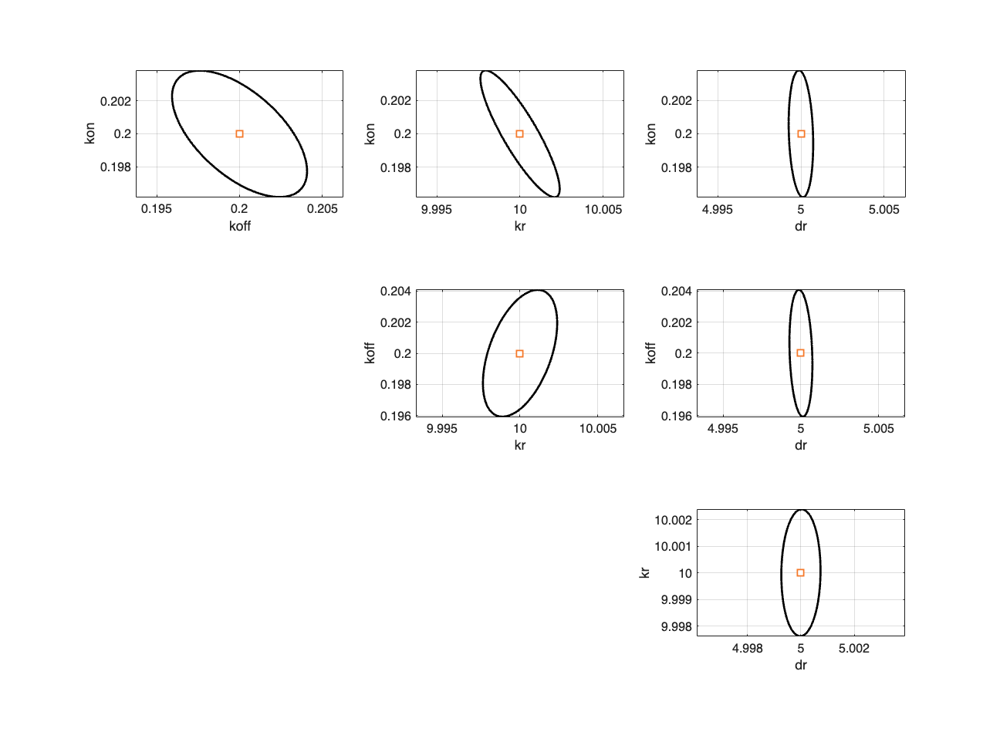
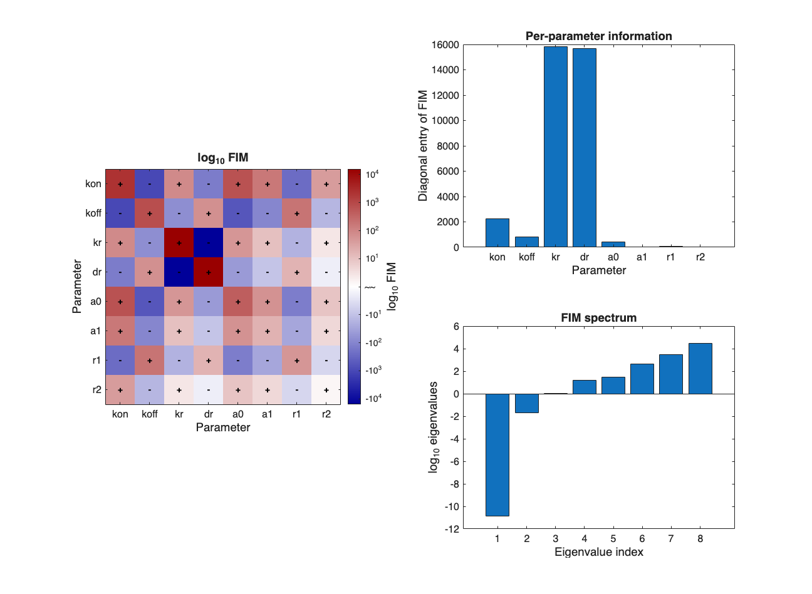
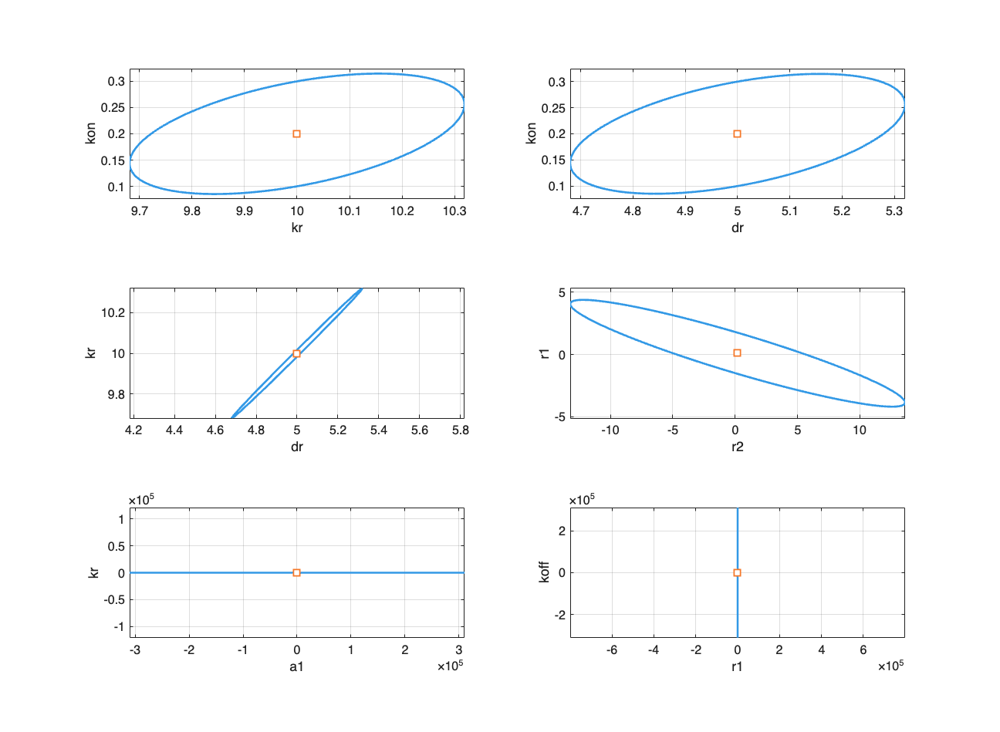
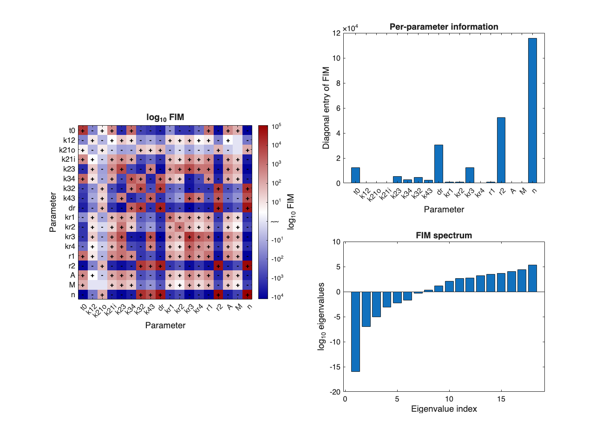
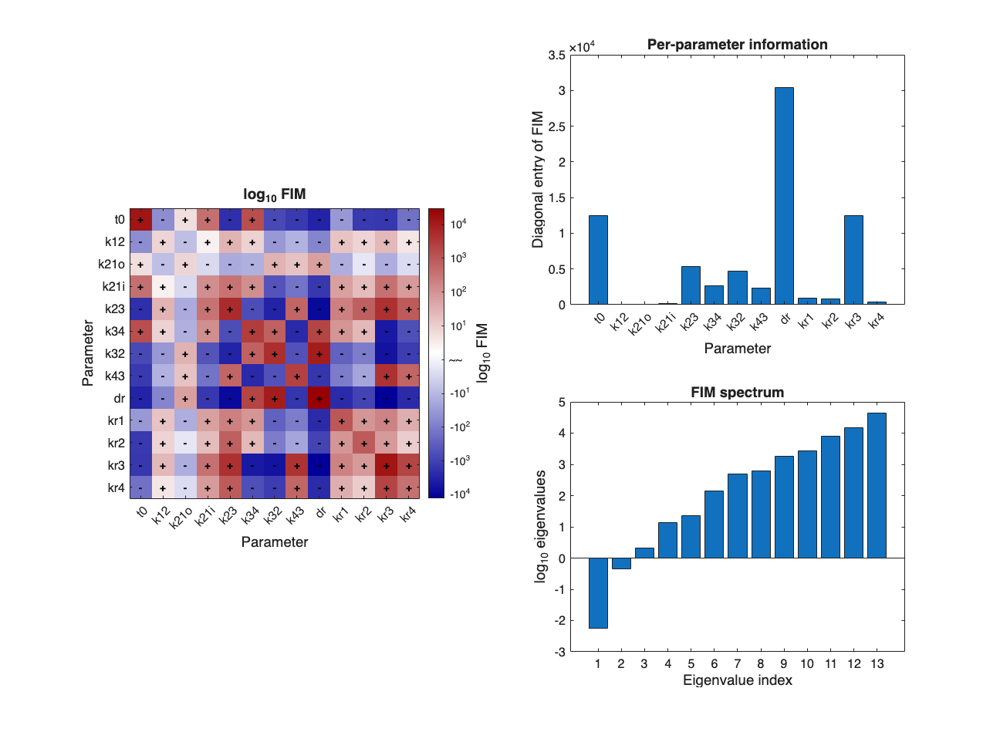
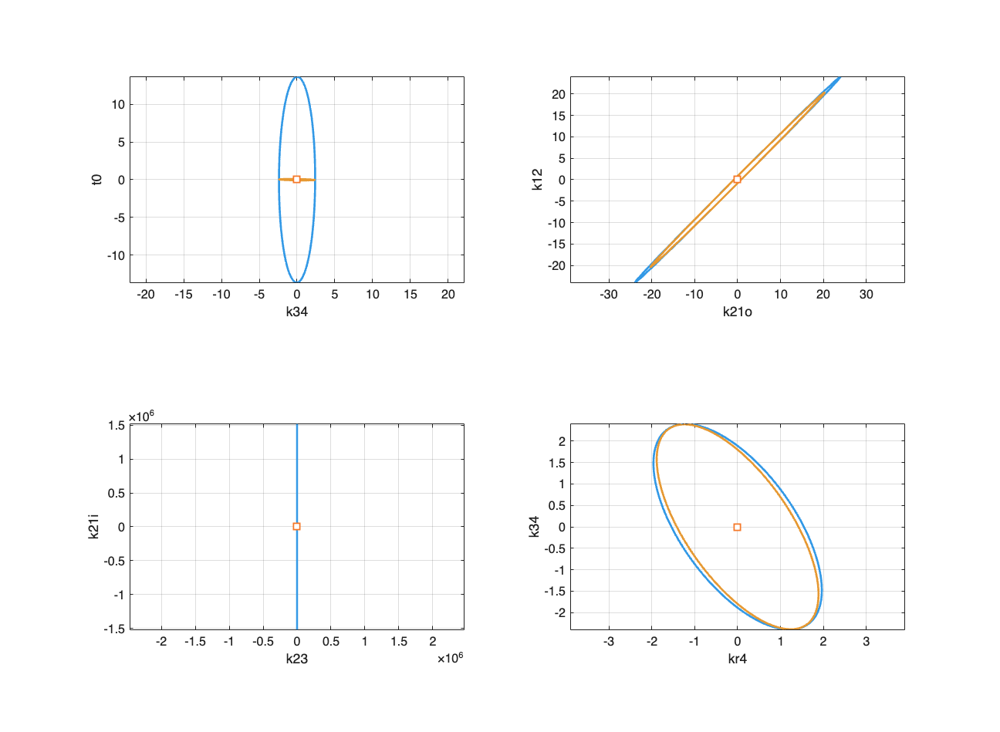

<!DOCTYPE HTML PUBLIC "-//W3C//DTD HTML 4.01 Transitional//EN">
<html>
<head>
<META http-equiv="Content-Type" content="text/html; charset=UTF-8">
<!--
This HTML was auto-generated from MATLAB code.
To make changes, update the MATLAB code and republish this document.
      -->
<title>example_07_FIM</title>
<meta name="generator" content="MATLAB 25.2">
<link rel="schema.DC" href="http://purl.org/dc/elements/1.1/">
<meta name="DC.date" content="2026-07-26">
<meta name="DC.source" content="example_07_FIM.m">
<style type="text/css">
html,body,div,span,applet,object,iframe,h1,h2,h3,h4,h5,h6,p,blockquote,pre,a,abbr,acronym,address,big,cite,code,del,dfn,em,font,img,ins,kbd,q,s,samp,small,strike,strong,tt,var,b,u,i,center,dl,dt,dd,ol,ul,li,fieldset,form,label,legend,table,caption,tbody,tfoot,thead,tr,th,td{margin:0;padding:0;border:0;outline:0;font-size:100%;vertical-align:baseline;background:transparent}body{line-height:1}ol,ul{list-style:none}blockquote,q{quotes:none}blockquote:before,blockquote:after,q:before,q:after{content:'';content:none}:focus{outine:0}ins{text-decoration:none}del{text-decoration:line-through}table{border-collapse:collapse;border-spacing:0}

html { min-height:100%; margin-bottom:1px; }
html body { height:100%; margin:0px; font-family:Arial, Helvetica, sans-serif; font-size:10px; color:#000; line-height:140%; background:#fff none; overflow-y:scroll; }
html body td { vertical-align:top; text-align:left; }

h1 { padding:0px; margin:0px 0px 25px; font-family:Arial, Helvetica, sans-serif; font-size:1.5em; color:#d55000; line-height:100%; font-weight:normal; }
h2 { padding:0px; margin:0px 0px 8px; font-family:Arial, Helvetica, sans-serif; font-size:1.2em; color:#000; font-weight:bold; line-height:140%; border-bottom:1px solid #d6d4d4; display:block; }
h3 { padding:0px; margin:0px 0px 5px; font-family:Arial, Helvetica, sans-serif; font-size:1.1em; color:#000; font-weight:bold; line-height:140%; }

a { color:#005fce; text-decoration:none; }
a:hover { color:#005fce; text-decoration:underline; }
a:visited { color:#004aa0; text-decoration:none; }

p { padding:0px; margin:0px 0px 20px; }
img { padding:0px; margin:0px 0px 20px; border:none; }
p img, pre img, tt img, li img, h1 img, h2 img { margin-bottom:0px; }

ul { padding:0px; margin:0px 0px 20px 23px; list-style:square; }
ul li { padding:0px; margin:0px 0px 7px 0px; }
ul li ul { padding:5px 0px 0px; margin:0px 0px 7px 23px; }
ul li ol li { list-style:decimal; }
ol { padding:0px; margin:0px 0px 20px 0px; list-style:decimal; }
ol li { padding:0px; margin:0px 0px 7px 23px; list-style-type:decimal; }
ol li ol { padding:5px 0px 0px; margin:0px 0px 7px 0px; }
ol li ol li { list-style-type:lower-alpha; }
ol li ul { padding-top:7px; }
ol li ul li { list-style:square; }

.content { font-size:1.2em; line-height:140%; padding: 20px; }

pre, code { font-size:12px; }
tt { font-size: 1.2em; }
pre { margin:0px 0px 20px; }
pre.codeinput { padding:10px; border:1px solid #d3d3d3; background:#f7f7f7; }
pre.codeoutput { padding:10px 11px; margin:0px 0px 20px; color:#4c4c4c; }
pre.error { color:red; }

@media print { pre.codeinput, pre.codeoutput { word-wrap:break-word; width:100%; } }

span.keyword { color:#0000FF }
span.comment { color:#228B22 }
span.string { color:#A020F0 }
span.untermstring { color:#B20000 }
span.syscmd { color:#B28C00 }
span.typesection { color:#A0522D }

.footer { width:auto; padding:10px 0px; margin:25px 0px 0px; border-top:1px dotted #878787; font-size:0.8em; line-height:140%; font-style:italic; color:#878787; text-align:left; float:none; }
.footer p { margin:0px; }
.footer a { color:#878787; }
.footer a:hover { color:#878787; text-decoration:underline; }
.footer a:visited { color:#878787; }

table th { padding:7px 5px; text-align:left; vertical-align:middle; border: 1px solid #d6d4d4; font-weight:bold; }
table td { padding:7px 5px; text-align:left; vertical-align:top; border:1px solid #d6d4d4; }


  </style>
</head>
<body>
<div class="content">
<h2>Contents</h2>
<div>
<ul>
<li>
<a href="#1">SSIT/Examples/example_07_FIM</a>
</li>
<li>
<a href="#2">Section 3.2.7: Fisher Information Matrix (FIM)</a>
</li>
<li>
<a href="#3">Preliminaries</a>
</li>
<li>
<a href="#4">Load pre-computed FSP solutions:</a>
</li>
<li>
<a href="#5">Ex(1): Compute the Fisher Information Matrix for the bursting gene model</a>
</li>
<li>
<a href="#6">Compute FIMs using FSP sensitivity results</a>
</li>
<li>
<a href="#7">Ex(2): Compute the Fisher Information Matrix for the STL1 yeast model</a>
</li>
<li>
<a href="#8">Compute FIMs using FSP sensitivity results</a>
</li>
<li>
<a href="#9">Ex(3): Compute the FIM for the 4-state STL1 yeast model</a>
</li>
<li>
<a href="#10">Define indices of free parameters for FIM sub matrix. (Hog1 input signal</a>
</li>
<li>
<a href="#11">params are experimentally known (thus fixed) and all others are free:</a>
</li>
<li>
<a href="#12">Compute FIMs using FSP sensitivity results</a>
</li>
<li>
<a href="#13">Plot the FIMs (full):</a>
</li>
<li>
<a href="#15">Full FIM</a>
</li>
<li>
<a href="#16">FIM sub matrix (free parameters):</a>
</li>
<li>
<a href="#17">Save models &amp; FIM results</a>
</li>
</ul>
</div>
<h2 id="1">SSIT/Examples/example_07_FIM</h2>
<pre class="codeinput">
<span class="comment">%%%%%%%%%%%%%%%%%%%%%%%%%%%%%%%%%%%%%%%%%%%%%%%%%%%%%%%%%%%%%%%%%%%%%%%%%%%</span>
</pre>
<h2 id="2">Section 3.2.7: Fisher Information Matrix (FIM)</h2>
<pre class="language-matlab">* Set up <span class="string">and</span> <span class="string">solve</span> <span class="string">the</span> <span class="string">FSP-FIM</span> <span class="string">matrix</span>
</pre>
<pre class="codeinput">
<span class="comment">%%%%%%%%%%%%%%%%%%%%%%%%%%%%%%%%%%%%%%%%%%%%%%%%%%%%%%%%%%%%%%%%%%%%%%%%%%%</span>
</pre>
<h2 id="3">Preliminaries</h2>
<p>Use the models from example_01_CreateSSITModels and computed FSP solutions from example_04_SolveSSITModels_FSP</p>
<pre class="codeinput">
<span class="comment">% clear</span>
<span class="comment">% close all</span>

<span class="comment">% example_01_CreateSSITModels</span>
<span class="comment">% example_04_SolveSSITModels_FSP</span>
</pre>
<h2 id="4">Load pre-computed FSP solutions:</h2>
<pre class="codeinput">load(<span class="string">'ExampleSaveFiles/example_4_SolveSSITModels_FSP.mat'</span>)

<span class="comment">% View model summaries:</span>
Model.summarizeModel
STL1.summarizeModel
STL1_4state.summarizeModel

<span class="comment">%%%%%%%%%%%%%%%%%%%%%%%%%%%%%%%%%%%%%%%%%%%%%%%%%%%%%%%%%%%%%%%%%%%%%%%%%%%</span>
</pre>
<pre class="codeoutput">Species:
     offGene; IC = 1;  discrete stochastic
     onGene; IC = 0;  discrete stochastic
     mRNA; IC = 0;  discrete stochastic
 
Reactions:
  Reaction 1:
     s1: 1*offGene --&gt; 1*onGene
     w1: kon * offGene
  Reaction 2:
     s2: 1*onGene --&gt; 1*offGene
     w2: koff * onGene
  Reaction 3:
     s3: NULL --&gt; 1*mRNA
     w3: kr * onGene
  Reaction 4:
     s4: 1*mRNA --&gt; NULL
     w4: dr * mRNA
 
Model Parameters:
    {'kon' }    {[2.0000e-01]}
    {'koff'}    {[2.0000e-01]}
    {'kr'  }    {[        10]}
    {'dr'  }    {[         5]}
ans = 
  SSIT with properties:

                       parameters: {4&times;2 cell}
                          species: {3&times;1 cell}
                    stoichiometry: [3&times;4 double]
              propensityFunctions: {4&times;1 cell}
                 inputExpressions: {}
                    specialEvents: []
             customConstraintFuns: {}
                       fspOptions: [1&times;1 struct]
                      sensOptions: [1&times;1 struct]
                       ssaOptions: [1&times;1 struct]
                       pdoOptions: [1&times;1 struct]
                   fittingOptions: [1&times;1 struct]
                 initialCondition: [3&times;1 double]
                     initialProbs: 1
                      initialTime: 0
                            tSpan: [0 5.0000e-01 1 &hellip; ] (1&times;101 double)
                   solutionScheme: 'FSP'
                    odeIntegrator: 'ode23s'
                  solutionSchemes: {}
            modelReductionOptions: [1&times;1 struct]
                          dataSet: []
                        useHybrid: 0
                    hybridOptions: [1&times;1 struct]
              propensitiesGeneral: {1&times;4 cell}
           propensitiesGeneralODE: []
          propensitiesGeneralMean: []
       propensitiesGeneralMeanJac: []
       propensitiesGeneralMoments: []
    propensitiesGeneralMomentsJac: []
             propensityFilePrefix: 'Model'
                        Solutions: [1&times;1 struct]
                      description: {'Add model description here'}
                         GUIProps: []
                   fspConstraints: [1&times;1 struct]
                   pars_container: [4&times;1 containers.Map]
Species:
     offGene; IC = 1;  discrete stochastic
     onGene; IC = 0;  discrete stochastic
     mRNA; IC = 0;  discrete stochastic
 
Reactions:
  Reaction 1:
     s1: 1*offGene --&gt; 1*onGene
     w1: kon * offGene
  Reaction 2:
     s2: 1*onGene --&gt; 1*offGene
     w2: onGene*koff/(1+Hog1)
  Reaction 3:
     s3: NULL --&gt; 1*mRNA
     w3: kr * onGene
  Reaction 4:
     s4: 1*mRNA --&gt; NULL
     w4: dr * mRNA
 
Input Signals:
     Hog1(t) = (a0+a1*exp(-r1*t)*(1-exp(-r2*t))*(t&gt;0))
 
Model Parameters:
    {'kon' }    {[2.0000e-01]}
    {'koff'}    {[2.0000e-01]}
    {'kr'  }    {[        10]}
    {'dr'  }    {[         5]}
    {'a0'  }    {[         5]}
    {'a1'  }    {[        10]}
    {'r1'  }    {[1.0000e-01]}
    {'r2'  }    {[2.0000e-01]}
ans = 
  SSIT with properties:

                       parameters: {8&times;2 cell}
                          species: {3&times;1 cell}
                    stoichiometry: [3&times;4 double]
              propensityFunctions: {4&times;1 cell}
                 inputExpressions: {1&times;2 cell}
                    specialEvents: []
             customConstraintFuns: {}
                       fspOptions: [1&times;1 struct]
                      sensOptions: [1&times;1 struct]
                       ssaOptions: [1&times;1 struct]
                       pdoOptions: [1&times;1 struct]
                   fittingOptions: [1&times;1 struct]
                 initialCondition: [3&times;1 double]
                     initialProbs: 1
                      initialTime: 0
                            tSpan: [0 5.0000e-01 1 &hellip; ] (1&times;101 double)
                   solutionScheme: 'FSP'
                    odeIntegrator: 'ode23s'
                  solutionSchemes: {}
            modelReductionOptions: [1&times;1 struct]
                          dataSet: []
                        useHybrid: 0
                    hybridOptions: [1&times;1 struct]
              propensitiesGeneral: {1&times;4 cell}
           propensitiesGeneralODE: []
          propensitiesGeneralMean: []
       propensitiesGeneralMeanJac: []
       propensitiesGeneralMoments: []
    propensitiesGeneralMomentsJac: []
             propensityFilePrefix: 'STL1'
                        Solutions: [1&times;1 struct]
                      description: {'Add model description here'}
                         GUIProps: []
                   fspConstraints: [1&times;1 struct]
                   pars_container: [8&times;1 containers.Map]
Species:
     g1; IC = 1;  discrete stochastic
     g2; IC = 0;  discrete stochastic
     g3; IC = 0;  discrete stochastic
     g4; IC = 0;  discrete stochastic
     mRNA; IC = 0;  discrete stochastic
 
Reactions:
  Reaction 1:
     s1: 1*g1 --&gt; 1*g2
     w1: k12*g1
  Reaction 2:
     s2: 1*g2 --&gt; 1*g1
     w2: (max(0,k21o*(1-k21i*Hog1)))*g2
  Reaction 3:
     s3: 1*g2 --&gt; 1*g3
     w3: k23*g2
  Reaction 4:
     s4: 1*g3 --&gt; 1*g2
     w4: k32*g3
  Reaction 5:
     s5: 1*g3 --&gt; 1*g4
     w5: k34*g3
  Reaction 6:
     s6: 1*g4 --&gt; 1*g3
     w6: k43*g4
  Reaction 7:
     s7: NULL --&gt; 1*mRNA
     w7: kr1*g1
  Reaction 8:
     s8: NULL --&gt; 1*mRNA
     w8: kr2*g2
  Reaction 9:
     s9: NULL --&gt; 1*mRNA
     w9: kr3*g3
  Reaction 10:
     s10: NULL --&gt; 1*mRNA
     w10: kr4*g4
  Reaction 11:
     s11: 1*mRNA --&gt; NULL
     w11: dr*mRNA
 
Input Signals:
     Hog1(t) = A*(((1-(exp(1)^(-r1*(t-t0))))*exp(1)^(-r2*(t-t0)))/(1+((1-(exp(1)^(-r1*(t-t0))))*exp(1)^(-r2*(t-t0)))/M))^n*(t&gt;t0)
 
Model Parameters:
    {'t0'  }    {[3.1700e+00]}
    {'k12' }    {[        78]}
    {'k21o'}    {[    192000]}
    {'k21i'}    {[      3200]}
    {'k23' }    {[4.0200e-01]}
    {'k34' }    {[7.8000e+00]}
    {'k32' }    {[1.6200e+00]}
    {'k43' }    {[2.2800e+00]}
    {'dr'  }    {[2.9400e-01]}
    {'kr1' }    {[4.6800e-02]}
    {'kr2' }    {[7.2000e-01]}
    {'kr3' }    {[5.9400e+01]}
    {'kr4' }    {[3.2400e+00]}
    {'r1'  }    {[4.1400e-03]}
    {'r2'  }    {[4.2600e-01]}
    {'A'   }    {[9.3000e+09]}
    {'M'   }    {[6.4000e-04]}
    {'n'   }    {[3.1000e+00]}
ans = 
  SSIT with properties:

                       parameters: {18&times;2 cell}
                          species: {5&times;1 cell}
                    stoichiometry: [5&times;11 double]
              propensityFunctions: {11&times;1 cell}
                 inputExpressions: {1&times;2 cell}
                    specialEvents: []
             customConstraintFuns: {}
                       fspOptions: [1&times;1 struct]
                      sensOptions: [1&times;1 struct]
                       ssaOptions: [1&times;1 struct]
                       pdoOptions: [1&times;1 struct]
                   fittingOptions: [1&times;1 struct]
                 initialCondition: [5&times;1 double]
                     initialProbs: 1
                      initialTime: 0
                            tSpan: [0 5.0000e-01 1 &hellip; ] (1&times;101 double)
                   solutionScheme: 'FSP'
                    odeIntegrator: 'ode23s'
                  solutionSchemes: {}
            modelReductionOptions: [1&times;1 struct]
                          dataSet: []
                        useHybrid: 0
                    hybridOptions: [1&times;1 struct]
              propensitiesGeneral: {1&times;11 cell}
           propensitiesGeneralODE: []
          propensitiesGeneralMean: []
       propensitiesGeneralMeanJac: []
       propensitiesGeneralMoments: []
    propensitiesGeneralMomentsJac: []
             propensityFilePrefix: 'STL1_4state'
                        Solutions: [1&times;1 struct]
                      description: {'Add model description here'}
                         GUIProps: []
                   fspConstraints: [1&times;1 struct]
                   pars_container: [18&times;1 containers.Map]
</pre>
<h2 id="5">Ex(1): Compute the Fisher Information Matrix for the bursting gene model</h2>
<pre>from example_01_CreateSSITModels</pre>
<pre class="codeinput">
<span class="comment">%%%%%%%%%%%%%%%%%%%%%%%%%%%%%%%%%%%%%%%%%%%%%%%%%%%%%%%%%%%%%%%%%%%%%%%%%%%</span>
</pre>
<h2 id="6">Compute FIMs using FSP sensitivity results</h2>
<p>Compute the FIM:</p>
<pre class="codeinput">Model_fimResults = Model.computeFIM(scale=<span class="string">'log'</span>);

<span class="comment">% Generate a count of measured cells (in place of real data):</span>
Model_cellCounts = 100*ones(size(Model.tSpan));

<span class="comment">% Evaluate the provided experiment design (in "cellCounts")</span>
<span class="comment">% and produce an array of FIMs (one for each parameter set):</span>
[Model_fimTotal,Model_mleCovEstimate,Model_fimMetrics] = <span class="keyword">...</span>
    Model.evaluateExperiment(Model_fimResults,Model_cellCounts)

theta0 = [Model.parameters{:,2}];

Model.plotFIMResults(Model_fimTotal, <span class="string">'log'</span>, Model.parameters,<span class="keyword">...</span>
                         theta0, PlotEllipses=true);

<span class="comment">%%%%%%%%%%%%%%%%%%%%%%%%%%%%%%%%%%%%%%%%%%%%%%%%%%%%%%%%%%%%%%%%%%%%%%%%%%%</span>
</pre>
<pre class="codeoutput">Model_fimTotal =
  1&times;1 cell array
    {4&times;4 double}
Model_mleCovEstimate =
  1&times;1 cell array
    {4&times;4 double}
Model_fimMetrics = 
  struct with fields:

          det: 4.8027e+24
        trace: 1.6623e+07
    minEigVal: 1.6309e+05
eigDisp =
   5.2124e+00
   5.7798e+00
   6.6223e+00
   7.0669e+00
</pre>
  <h2 id="7">Ex(2): Compute the Fisher Information Matrix for the STL1 yeast model</h2>
<pre>from example_01_CreateSSITModels</pre>
<pre class="codeinput">
<span class="comment">%%%%%%%%%%%%%%%%%%%%%%%%%%%%%%%%%%%%%%%%%%%%%%%%%%%%%%%%%%%%%%%%%%%%%%%%%%%</span>
</pre>
<h2 id="8">Compute FIMs using FSP sensitivity results</h2>
<p>Compute the FIM:</p>
<pre class="codeinput">STL1_fimResults = STL1.computeFIM(scale=<span class="string">'log'</span>);

<span class="comment">% Generate a count of measured cells (in place of real data):</span>
STL1_cellCounts = 100*ones(size(STL1.tSpan));

<span class="comment">% Evaluate the provided experiment design (in "cellCounts")</span>
<span class="comment">% and produce an array of FIMs (one for each parameter set):</span>
[STL1_fimTotal,STL1_mleCovEstimate,STL1_fimMetrics] = <span class="keyword">...</span>
    STL1.evaluateExperiment(STL1_fimResults,STL1_cellCounts)

STL1_theta0 = [STL1.parameters{:,2}];

<span class="comment">% Plot the FIMs:</span>
STL1.plotFIMResults(STL1_fimTotal, <span class="string">'log'</span>, STL1.parameters,<span class="keyword">...</span>
                        STL1_theta0, PlotEllipses=true,<span class="keyword">...</span>
                        EllipsePairs=[1 3; 1 4; 3 4; 7 8; 3 6; 2 7]);

<span class="comment">%%%%%%%%%%%%%%%%%%%%%%%%%%%%%%%%%%%%%%%%%%%%%%%%%%%%%%%%%%%%%%%%%%%%%%%%%%%</span>
</pre>
<pre class="codeoutput">FIM has rank 7 and is not invertable for this experiment design
STL1_fimTotal =
  1&times;1 cell array
    {8&times;8 double}
STL1_mleCovEstimate =
  1&times;1 cell array
    {8&times;8 double}
STL1_fimMetrics = 
  struct with fields:

          det: 5.0910e+00
        trace: 3.5112e+04
    minEigVal: 1.3162e-11
eigDisp =
  -1.0857e+01
  -1.7100e+00
   4.1386e-02
   1.1807e+00
   1.4471e+00
   2.6353e+00
   3.4946e+00
   4.4985e+00
</pre>
  <h2 id="9">Ex(3): Compute the FIM for the 4-state STL1 yeast model</h2>
<pre>from example_01_CreateSSITModels</pre>
<pre class="codeinput">
<span class="comment">%%%%%%%%%%%%%%%%%%%%%%%%%%%%%%%%%%%%%%%%%%%%%%%%%%%%%%%%%%%%%%%%%%%%%%%%%%%</span>
</pre>
<h2 id="10">Define indices of free parameters for FIM sub matrix. (Hog1 input signal</h2>
<h2 id="11">params are experimentally known (thus fixed) and all others are free:</h2>
<pre class="codeinput">freePars = 1:13;

<span class="comment">% Specify time points and numbers of cells for experiments</span>
STL1_4state.tSpan = [0,1,2,4,6,8,10:5:55];
cellCounts = 1000*ones(1,16);
</pre>
<h2 id="12">Compute FIMs using FSP sensitivity results</h2>
<p>Compute the full FIM:</p>
<pre class="codeinput">fims_full = STL1_4state.computeFIM(scale=<span class="string">'log'</span>,observed=<span class="string">'mRNA'</span>); <span class="comment">% full FIM</span>

<span class="comment">% Compute the FIM sub matrix for free parameters:</span>
fims_free = STL1_4state.computeFIM(scale=<span class="string">'log'</span>,observed=<span class="string">'mRNA'</span>,<span class="keyword">...</span>
    freePars=freePars); <span class="comment">% FIM sub matrix</span>

<span class="comment">% - Or, get the number of cells using 'nCells':</span>
<span class="comment">% STL1_4state_cellCounts = ...</span>
<span class="comment">% STL1_4state_data.dataSet.nCells*ones(size(STL1_4state.tSpan));</span>

<span class="comment">% Evaluate the provided experiment design (in "cellCounts")</span>
<span class="comment">% and produce an array of FIMs (one for each parameter set):</span>
[fimTotal_full,mleCovEstimate_full,fimMetrics_full] = <span class="keyword">...</span>
    STL1_4state.evaluateExperiment(fims_full,cellCounts)

[fimTotal_free,mleCovEstimate_free,fimMetrics_free] = <span class="keyword">...</span>
    STL1_4state.evaluateExperiment(fims_free,cellCounts)
</pre>
<pre class="codeoutput">FIM has rank 17 and is not invertable for this experiment design
fimTotal_full =
  1&times;1 cell array
    {18&times;18 double}
mleCovEstimate_full =
  1&times;1 cell array
    {18&times;18 double}
fimMetrics_full = 
  struct with fields:

          det: 5.1000e-01
        trace: 2.4188e+05
    minEigVal: 7.8425e-14
fimTotal_free =
  1&times;1 cell array
    {13&times;13 double}
mleCovEstimate_free =
  1&times;1 cell array
    {13&times;13 double}
fimMetrics_free = 
  struct with fields:

          det: 1.6206e+27
        trace: 7.2720e+04
    minEigVal: 5.5396e-03
</pre>
<h2 id="13">Plot the FIMs (full):</h2>
<pre class="codeinput">f1 = figure(11);
f2 = figure(12);
STL1_4state.plotFIMResults(fimTotal_full,<span class="string">'log'</span>,STL1_4state.parameters,<span class="keyword">...</span>
    PlotEllipses=true, EllipseFigure=f1,<span class="keyword">...</span>
    EllipsePairs=[1 6; 2 3; 4 5; 6 13], FigureHandle=f2,<span class="keyword">...</span>
    Colors=struct(<span class="string">'EllipseColors'</span>,[0.2 0.6 0.9],<span class="keyword">...</span>
    <span class="string">'CenterSquare'</span>,[0.96,0.47,0.16]));

<span class="comment">% Plot the FIMs (free):</span>
f3 = figure(13);
STL1_4state.plotFIMResults(fimTotal_free, <span class="string">'log'</span>,<span class="keyword">...</span>
    STL1_4state.parameters(1:13),PlotEllipses=true,EllipseFigure=f1,<span class="keyword">...</span>
    EllipsePairs=[1 6; 2 3; 4 5; 6 13],FigureHandle=f3,<span class="keyword">...</span>
    Colors=struct(<span class="string">'EllipseColors'</span>,[0.9 0.6 0.2],<span class="keyword">...</span>
    <span class="string">'CenterSquare'</span>,[0.96,0.47,0.16]));
</pre>
<pre class="codeoutput">eigDisp =
  -1.6000e+01
  -6.9784e+00
  -5.0308e+00
  -3.1130e+00
  -2.2572e+00
  -1.6840e+00
  -3.4103e-01
   3.1129e-01
   1.1292e+00
   2.1120e+00
   2.5945e+00
   2.7618e+00
   3.2006e+00
   3.4363e+00
   3.6749e+00
   4.0313e+00
   4.4180e+00
   5.2896e+00
eigDisp =
  -2.2565e+00
  -3.4113e-01
   3.0975e-01
   1.1251e+00
   1.3540e+00
   2.1414e+00
   2.6814e+00
   2.7892e+00
   3.2503e+00
   3.4413e+00
   3.8940e+00
   4.1772e+00
   4.6438e+00
</pre>
   <p>Note: If detI(θ)=0, then at least one eigenvalue =0. That means the FIM is rank-deficient, so there is at least one non-trivial linear combination of parameters whose variance (via the Cram&eacute;r&ndash;Rao bound) is infinite. That direction is locally non-identifiable at ; the likelihood is flat in that direction. If detI(θ) is nonzero but extremely small, that usually means one or more eigenvalues are tiny (but not exactly zero). Then there is practical non-identifiability or very strong parameter correlation: those directions in parameter space are only very weakly constrained by your experiment.</p>
<pre class="codeinput">
<span class="comment">% Model_fimMetrics =</span>
<span class="comment">%          det: 4.8027e+24</span>
<span class="comment">%        trace: 1.6623e+07</span>
<span class="comment">%    minEigVal: 1.6309e+05</span>

<span class="comment">% STL1_fimMetrics =</span>
<span class="comment">%          det: 9.9840e+00</span>
<span class="comment">%        trace: 3.5112e+04</span>
<span class="comment">%    minEigVal: 2.5775e-11</span>
</pre>
<h2 id="15">Full FIM</h2>
<p>STL1_4state_fimMetrics = det: 1.7388e+09 trace: 2.4234e+05 minEigVal: -3.4038e-14</p>
<h2 id="16">FIM sub matrix (free parameters):</h2>
<p>STL1_4state_fimMetrics_free = det: 2.7363e+29 trace: 7.2778e+04 minEigVal: 2.9656e-01</p>
<h2 id="17">Save models &amp; FIM results</h2>
<pre class="codeinput">saveNames = unique({<span class="string">'Model'</span>
    <span class="string">'Model_fimResults'</span>
    <span class="string">'Model_cellCounts'</span>
    <span class="string">'Model_fimTotal'</span>
    <span class="string">'Model_mleCovEstimate'</span>
    <span class="string">'Model_fimMetrics'</span>
    <span class="string">'STL1'</span>
    <span class="string">'STL1_fimResults'</span>
    <span class="string">'STL1_cellCounts'</span>
    <span class="string">'STL1_fimTotal'</span>
    <span class="string">'STL1_mleCovEstimate'</span>
    <span class="string">'STL1_fimMetrics'</span>
    <span class="string">'STL1_4state'</span>
    <span class="string">'cellCounts'</span>
    <span class="string">'fimTotal_full'</span>
    <span class="string">'fimTotal_free'</span>
    <span class="string">'mleCovEstimate_full'</span>
    <span class="string">'mleCovEstimate_free'</span>
    <span class="string">'fimMetrics_full'</span>
    <span class="string">'fimMetrics_free'</span>
    <span class="string">'freePars'</span>
    });

save(<span class="string">'ExampleSaveFiles/example_7_FIM'</span>,saveNames{:})
</pre>
<p class="footer">
<br>
<a href="https://www.mathworks.com/products/matlab/">Published with MATLAB&reg; R2025b</a>
<br>
</p>
</div>
<!--
##### SOURCE BEGIN #####
%% SSIT/Examples/example_07_FIM

%%%%%%%%%%%%%%%%%%%%%%%%%%%%%%%%%%%%%%%%%%%%%%%%%%%%%%%%%%%%%%%%%%%%%%%%%%%
%% Section 3.2.7: Fisher Information Matrix (FIM)
%   * Set up and solve the FSP-FIM matrix 
%%%%%%%%%%%%%%%%%%%%%%%%%%%%%%%%%%%%%%%%%%%%%%%%%%%%%%%%%%%%%%%%%%%%%%%%%%%

%% Preliminaries
% Use the models from example_01_CreateSSITModels and computed FSP solutions 
% from example_04_SolveSSITModels_FSP

% clear
% close all

% example_01_CreateSSITModels  
% example_04_SolveSSITModels_FSP

%% Load pre-computed FSP solutions:
load('ExampleSaveFiles/example_4_SolveSSITModels_FSP.mat')

% View model summaries:
Model.summarizeModel
STL1.summarizeModel
STL1_4state.summarizeModel

%%%%%%%%%%%%%%%%%%%%%%%%%%%%%%%%%%%%%%%%%%%%%%%%%%%%%%%%%%%%%%%%%%%%%%%%%%%
%% Ex(1): Compute the Fisher Information Matrix for the bursting gene model
%  from example_01_CreateSSITModels
%%%%%%%%%%%%%%%%%%%%%%%%%%%%%%%%%%%%%%%%%%%%%%%%%%%%%%%%%%%%%%%%%%%%%%%%%%%

%% Compute FIMs using FSP sensitivity results
% Compute the FIM:
Model_fimResults = Model.computeFIM(scale='log'); 

% Generate a count of measured cells (in place of real data):
Model_cellCounts = 100*ones(size(Model.tSpan));

% Evaluate the provided experiment design (in "cellCounts") 
% and produce an array of FIMs (one for each parameter set):
[Model_fimTotal,Model_mleCovEstimate,Model_fimMetrics] = ...
    Model.evaluateExperiment(Model_fimResults,Model_cellCounts)

theta0 = [Model.parameters{:,2}];

Model.plotFIMResults(Model_fimTotal, 'log', Model.parameters,...
                         theta0, PlotEllipses=true);

%%%%%%%%%%%%%%%%%%%%%%%%%%%%%%%%%%%%%%%%%%%%%%%%%%%%%%%%%%%%%%%%%%%%%%%%%%%
%% Ex(2): Compute the Fisher Information Matrix for the STL1 yeast model
%  from example_01_CreateSSITModels
%%%%%%%%%%%%%%%%%%%%%%%%%%%%%%%%%%%%%%%%%%%%%%%%%%%%%%%%%%%%%%%%%%%%%%%%%%%
%% Compute FIMs using FSP sensitivity results
% Compute the FIM:
STL1_fimResults = STL1.computeFIM(scale='log'); 

% Generate a count of measured cells (in place of real data):
STL1_cellCounts = 100*ones(size(STL1.tSpan));

% Evaluate the provided experiment design (in "cellCounts") 
% and produce an array of FIMs (one for each parameter set):
[STL1_fimTotal,STL1_mleCovEstimate,STL1_fimMetrics] = ...
    STL1.evaluateExperiment(STL1_fimResults,STL1_cellCounts)

STL1_theta0 = [STL1.parameters{:,2}];

% Plot the FIMs:
STL1.plotFIMResults(STL1_fimTotal, 'log', STL1.parameters,...
                        STL1_theta0, PlotEllipses=true,...
                        EllipsePairs=[1 3; 1 4; 3 4; 7 8; 3 6; 2 7]);

%%%%%%%%%%%%%%%%%%%%%%%%%%%%%%%%%%%%%%%%%%%%%%%%%%%%%%%%%%%%%%%%%%%%%%%%%%%
%% Ex(3): Compute the FIM for the 4-state STL1 yeast model
%  from example_01_CreateSSITModels
%%%%%%%%%%%%%%%%%%%%%%%%%%%%%%%%%%%%%%%%%%%%%%%%%%%%%%%%%%%%%%%%%%%%%%%%%%%

%% Define indices of free parameters for FIM sub matrix. (Hog1 input signal
%% params are experimentally known (thus fixed) and all others are free:
freePars = 1:13;

% Specify time points and numbers of cells for experiments
STL1_4state.tSpan = [0,1,2,4,6,8,10:5:55];
cellCounts = 1000*ones(1,16);

%% Compute FIMs using FSP sensitivity results
% Compute the full FIM:
fims_full = STL1_4state.computeFIM(scale='log',observed='mRNA'); % full FIM

% Compute the FIM sub matrix for free parameters:
fims_free = STL1_4state.computeFIM(scale='log',observed='mRNA',...
    freePars=freePars); % FIM sub matrix

% - Or, get the number of cells using 'nCells':
% STL1_4state_cellCounts = ...
% STL1_4state_data.dataSet.nCells*ones(size(STL1_4state.tSpan));

% Evaluate the provided experiment design (in "cellCounts") 
% and produce an array of FIMs (one for each parameter set):
[fimTotal_full,mleCovEstimate_full,fimMetrics_full] = ...
    STL1_4state.evaluateExperiment(fims_full,cellCounts)

[fimTotal_free,mleCovEstimate_free,fimMetrics_free] = ...
    STL1_4state.evaluateExperiment(fims_free,cellCounts)

%% Plot the FIMs (full):
f1 = figure(11);
f2 = figure(12);
STL1_4state.plotFIMResults(fimTotal_full,'log',STL1_4state.parameters,...
    PlotEllipses=true, EllipseFigure=f1,...
    EllipsePairs=[1 6; 2 3; 4 5; 6 13], FigureHandle=f2,...
    Colors=struct('EllipseColors',[0.2 0.6 0.9],...
    'CenterSquare',[0.96,0.47,0.16]));

% Plot the FIMs (free):
f3 = figure(13);
STL1_4state.plotFIMResults(fimTotal_free, 'log',...
    STL1_4state.parameters(1:13),PlotEllipses=true,EllipseFigure=f1,...
    EllipsePairs=[1 6; 2 3; 4 5; 6 13],FigureHandle=f3,...
    Colors=struct('EllipseColors',[0.9 0.6 0.2],...
    'CenterSquare',[0.96,0.47,0.16]));

%%
% Note:  If detI(θ)=0, then at least one eigenvalue =0. That means the 
% FIM is rank-deficient, so there is at least one non-trivial linear 
% combination of parameters whose variance (via the Cramér–Rao bound) is 
% infinite. That direction is locally non-identifiable at ; the likelihood 
% is flat in that direction.  If detI(θ) is nonzero but extremely small, 
% that usually means one or more eigenvalues are tiny (but not exactly 
% zero). Then there is practical non-identifiability or very strong 
% parameter correlation: those directions in parameter space are only very 
% weakly constrained by your experiment.

% Model_fimMetrics = 
%          det: 4.8027e+24
%        trace: 1.6623e+07
%    minEigVal: 1.6309e+05

% STL1_fimMetrics = 
%          det: 9.9840e+00
%        trace: 3.5112e+04
%    minEigVal: 2.5775e-11

%% Full FIM
% STL1_4state_fimMetrics = 
%          det: 1.7388e+09
%        trace: 2.4234e+05
%    minEigVal: -3.4038e-14

%% FIM sub matrix (free parameters):
% STL1_4state_fimMetrics_free =  
%           det: 2.7363e+29
%         trace: 7.2778e+04
%     minEigVal: 2.9656e-01


%% Save models & FIM results
saveNames = unique({'Model'
    'Model_fimResults'
    'Model_cellCounts'
    'Model_fimTotal'
    'Model_mleCovEstimate'
    'Model_fimMetrics'
    'STL1'
    'STL1_fimResults'
    'STL1_cellCounts'
    'STL1_fimTotal'
    'STL1_mleCovEstimate'
    'STL1_fimMetrics'
    'STL1_4state'
    'cellCounts'
    'fimTotal_full'
    'fimTotal_free'
    'mleCovEstimate_full'
    'mleCovEstimate_free'
    'fimMetrics_full'
    'fimMetrics_free'
    'freePars'
    });
    
save('ExampleSaveFiles/example_7_FIM',saveNames{:})

##### SOURCE END #####
-->
</body>
</html>
